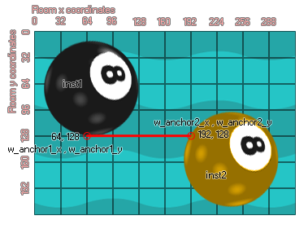

physics_joint_distance_create(inst1, inst2, w_anchor1_x, w_anchor1_y, w_anchor2_x, w_anchor2_y, col)
| Argument | La description |
|---|---|
| inst1 | La première instance à se connecter avec l'articulation |
| inst2 | La deuxième instance pour se connecter avec l'articulation |
| w_anchor1_x | La première coordonnée x pour l'articulation, dans le monde du jeu |
| w_anchor1_y | La première coordonnée y pour l'articulation, dans le monde du jeu |
| w_anchor2_x | La deuxième coordonnée x pour l'articulation, dans le monde du jeu |
| w_anchor2_y | la deuxième coordonnée y pour l'articulation, dans le monde du jeu |
| col | Si les deux instances peuvent entrer en collision (vrai) ou non (faux) |
Renvoie: Index de l'articulation
L'un des joints les plus simples est un joint de distance qui dit que la distance entre deux points sur deux instances doit être constante. Lorsque vous spécifiez une jointure de distance, les deux instances doivent déjà être créées et un projecteur doit être affecté, puis vous définissez les deux points d'ancrage dans les coordonnées de la pièce. Le premier point d'ancrage est connecté à l'instance 1, le deuxième point d'ancrage est connecté à l'instance 2 et la distance entre ces points implique la longueur de la contrainte de distance. L'image ci-dessous montre comment cela fonctionne:

Comme vous pouvez le voir, les points d'ancrage sont spécifiés comme coordonnées de pièce. Il faut donc faire attention en les définissant, surtout si les instances sont créées en même temps que les articulations plutôt que d'être placées dans la pièce par l'éditeur de pièce. Vous devez également vous rendre compte que les articulations sont créées indépendamment de la taille de l'image-objet des instances ou des installations auxquelles elles sont rattachées. Ainsi, si vous créez une jointure de distance ailleurs que dans l'origine de l'instance, elle est toujours valide et contraindra les deux instances par rapport à la position à laquelle elle a été créée. Si vous définissez la valeur "col" sur true alors les deux instances peuvent interagir et entrer en collision les unes avec les autres, mais seulement si elles ont des événements de collision, mais si elle est définie sur false, ils ne vont pas entrer en collision, peu importe quoi.
var mainFixture, o_id;
mainFixture = physics_fixture_create();
physics_fixture_set_circle_shape(mainFixture,
sprite_get_width(sprite_index) / 2);
o_id=instance_create_layer(x+300, y, "Instances", obj_Rudder);
physics_fixture_bind(mainFixture, id);
physics_fixture_bind(mainFixture, o_id);
physics_joint_distance_create(id, o_id, x + 50, y, o_id.x - 50,
o_id.y, 0);
physics_fixture_delete(mainFixture);
Le code ci-dessus crée et définit un nouveau fixture, puis crée une instance de "obj_Rudder". Le projecteur est ensuite assigné à l'instance qui exécute le code ainsi que le nouvellement créé et une jointure est créée entre eux. Enfin, le projecteur est supprimé car il n'est plus nécessaire.